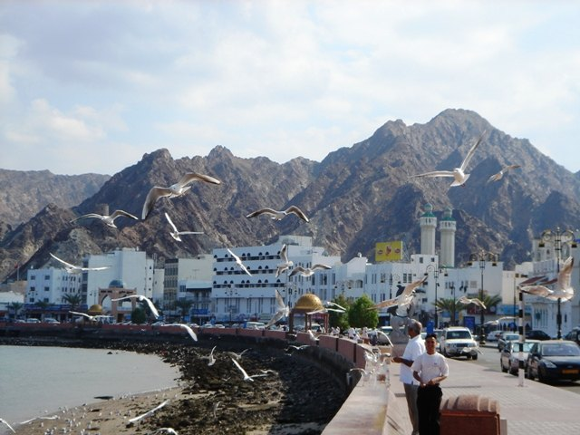
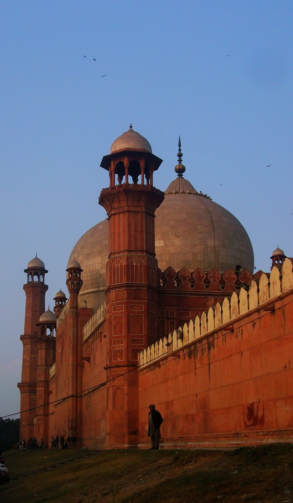

OMAN / COAST & CULTURE
Muscat & Mutrah
Follow the curve of the corniche, explore the souq and take in the rugged mountains behind the harbour. Dress respectfully and check visiting arrangements for religious and cultural sites.
HERITAGE, FOOD & TOURISM
From mountain-backed harbours to Mughal courtyards, discover two countries with a remarkable sense of place.

OMAN / COAST & CULTURE
Follow the curve of the corniche, explore the souq and take in the rugged mountains behind the harbour. Dress respectfully and check visiting arrangements for religious and cultural sites.

PAKISTAN / ARCHITECTURE & HISTORY
Discover Lahore’s historic urban fabric and Mughal heritage, then explore Islamabad’s modern capital setting against the Margalla Hills. Verify opening hours and local access conditions.
Explore inland fort heritage around Nizwa, maritime traditions in Sur, and the distinctive landscapes of Dhofar. Seasonal conditions vary considerably across the country.
Official Oman tourismPakistan’s coastal and mountain regions offer very different journeys. Check current advisories, permissions, road access, altitude and seasonal weather before planning.
Pakistan tourism resourcesShowing all 4 destinations
FOOD AS A SHARED LANGUAGE
Omani kahwa and dates are associated with a generous tradition of welcome. Shuwa, often prepared for celebrations, reflects another side of the country’s culinary heritage.
Explore the food notesBiryani, regional breads, grilled dishes and chai offer just a glimpse of Pakistan’s diverse food traditions, shaped by geography and community.
Explore the food notesRice, fragrant spices and the ritual of sharing food create points of familiarity without erasing the distinct traditions of either country.
Explore the food notesAsk about ingredients and allergens, respect local customs and avoid photographing people without permission. Support local guides, craftspeople and small businesses. Heritage is a living culture as well as a collection of monuments.
A SHARED HORIZON
Discover the stories, places and possibilities
that bring our two nations together.